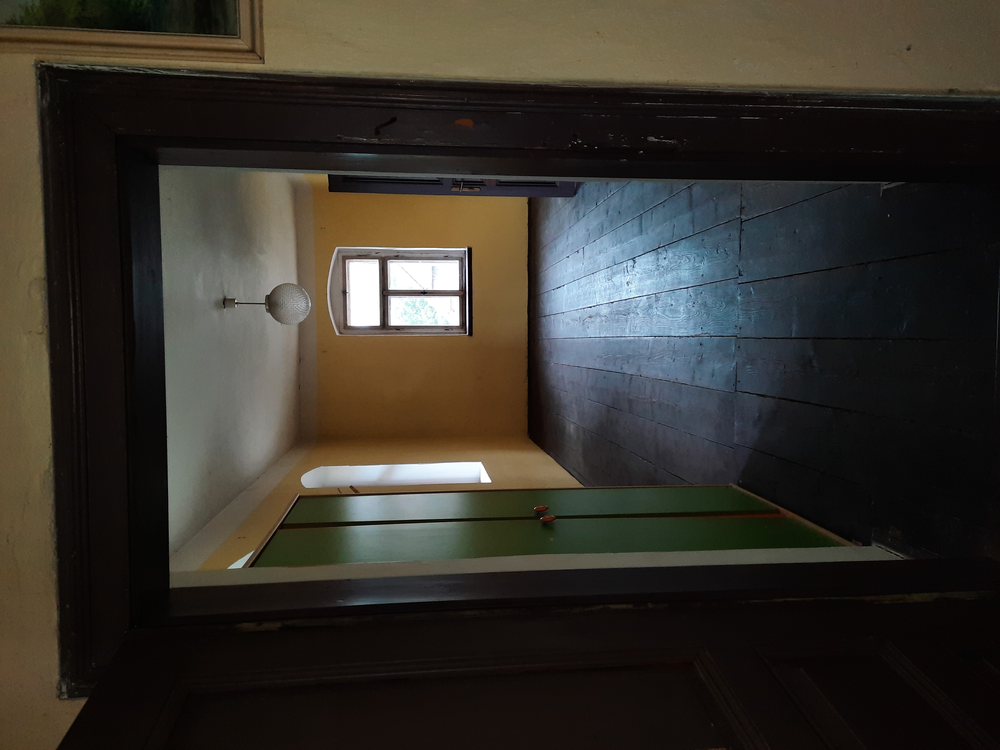
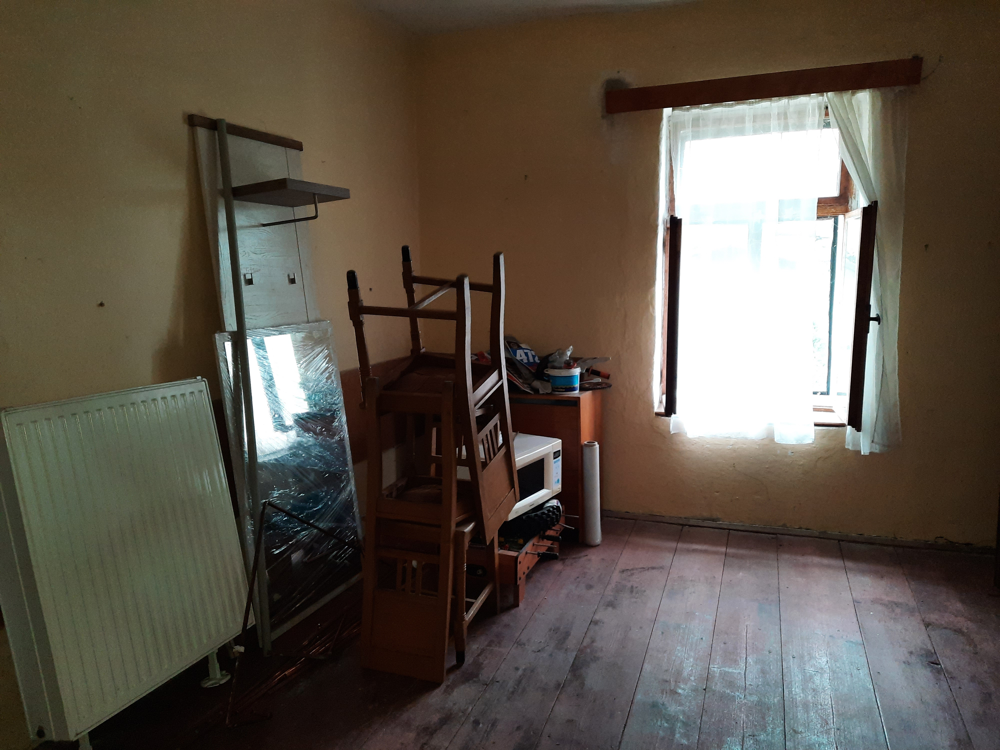
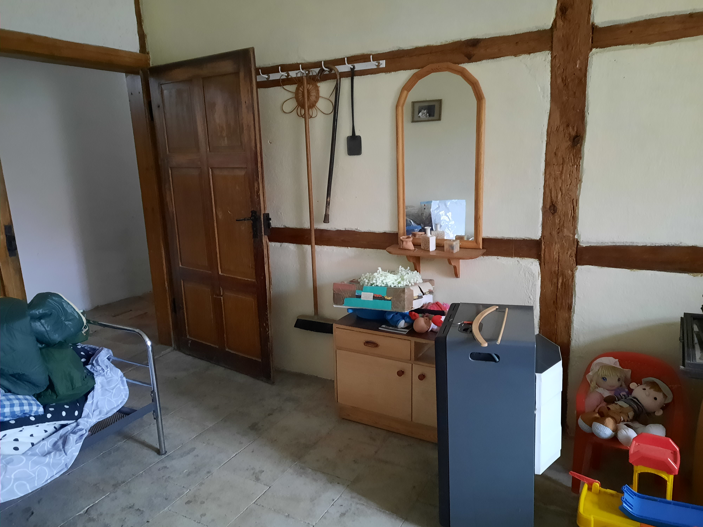
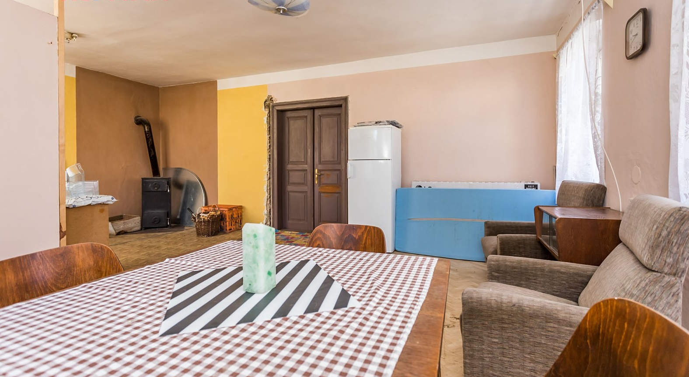
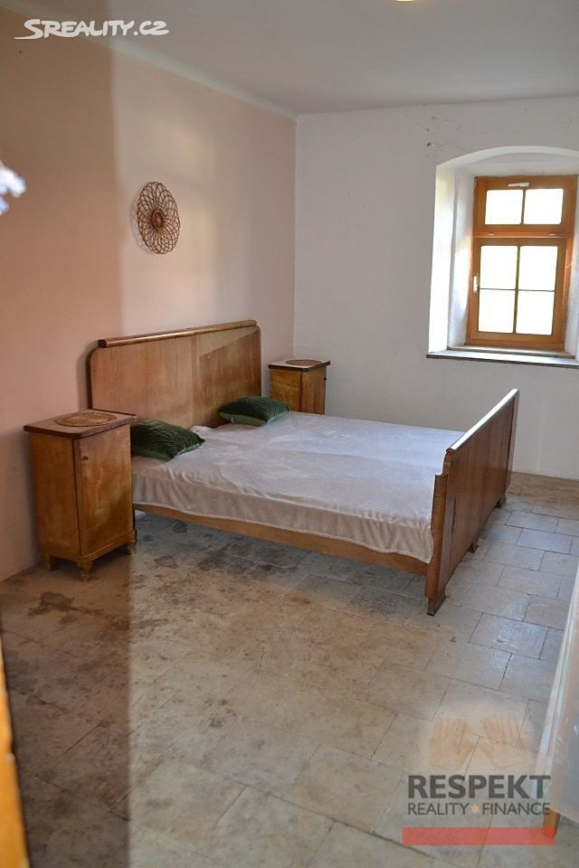
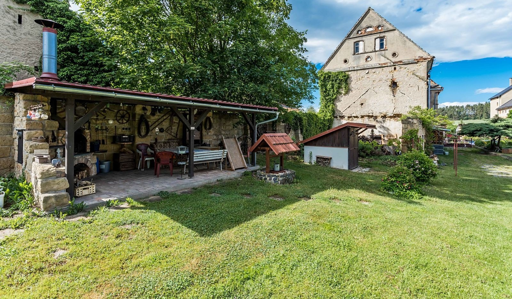

Hledali jsme klidné místo pro odpočinutí od všedního shonu, procházky přírodou, meditaci.
Tady jsme ho našli a rádi se o něj podělíme. Pod názvem Útulna si možná představíte jen boudu se základním vybavením bez dalších služeb. Základní vybavení bez dalších služeb platí …, ale naše útulna se nachází v patře starobylého statku. Zveme vás do našeho útulného bytu.
Útulný byt je ten, do kterého se vždy chcete vrátit, abyste si odpočinuli, relaxovali a uklidnili se. Jedná se o velmi zvláštní místo - oázu klidu, bezpečný azyl a zároveň prostor, kde si můžete po stresujícím dni plném výzev odpočinout.

Pokud se nacházíte na Litoměřicku a měli byste chuť si zajet na houby, tak Vás každý odkáže do okolí Úštěka, jedním z takových míst les.
Více informací...
Rozsáhlé torzo hradu ležícího na pískovcovém bloku 3 km od Úštěka. Dominuje mu třípatrová věž, později upravená v romantickém stylu.
Více informací...
Poutní místo na vrchu Kalvárie nad vsí OSTRÉ U ÚŠTĚKU bylo vytvořeno liběšickými jezuity v roce 1707 podle návrhu litoměřického architekta Octavia Broggia.
Více informací...
Dva kilometry východně od Úštěka se rozprostírá tak zvané Úštěcké Švýcarsko. Je to pískovcová skalní oblast.
Více informací...
Vyrážíme na výlet na nádhernou zříceninu hradu Ronov na Českolipsku nad vesničkou Blíževedly. Cesta bude strmá, náročná, ale rozhodně stojí zato.
Více informací...Jiří Roubík, tel.: 775 334 133
Rašovice 5
411 45 Úštěk-České Předměstí
Nadroklemi@mail.cz
Tel. 775 334 133
PROVOZNÍ ŘÁD KE STAŽENÍ